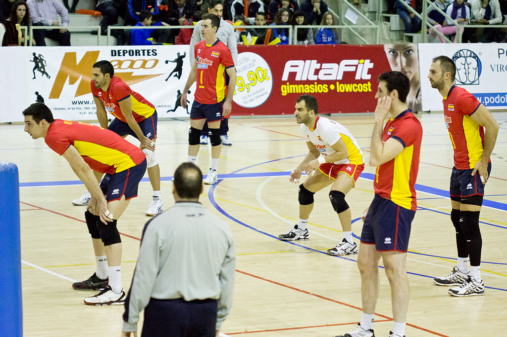

Fundamentos basicos del volleyball
El juego

El objetivo del juego es que un equipo pase el balón por encima de
la red y toque el suelo del campo contrario, y también evitar que el
equipo adversario realice lo mismo en el campo propio. Cada equipo tiene
tres toques para pasar el balón al campo contrario (además del contacto
del bloqueo). El balón se pone en juego con un saque que es un golpeo del
sacador que intenta enviarlo al campo adversario por encima de la red.
El juego sigue hasta que el balón toca el pavimento, sale fuera o un equipo
no puede devolverlo en condiciones. El equipo que gana la jugada anota el punto.
Cuando gana el punto el equipo que no sacaba, consigue también el saque para el
próximo punto y sus jugadores deben rotar en el sentido de las agujas del reloj.
18
Cada equipo juega con seis jugadores que pueden ser sustituidos con condiciones.
Tres de los jugadores forman la línea delantera, en tareas de ataque y los otros
tres se colocan detrás y actúan de defensores o zagueros.
El equipo completo lo pueden formar un máximo de 14 jugadores
(12 más 2 líberos), un entrenador, un entrenador asistente, un masajista y
un médico. Cada jugador se identifica por un número distinto, del 1 al 20,
número que aparece tanto en la parte delantera como en la trasera de la
camiseta. Uno de los jugadores será el capitán del equipo y se identifica
por una banda visible debajo de su número. Los líberos no pueden ser capitán
y son los únicos que pueden y tienen que vestir una indumentaria distinta,
generalmente de distintos colores al resto del equipo.